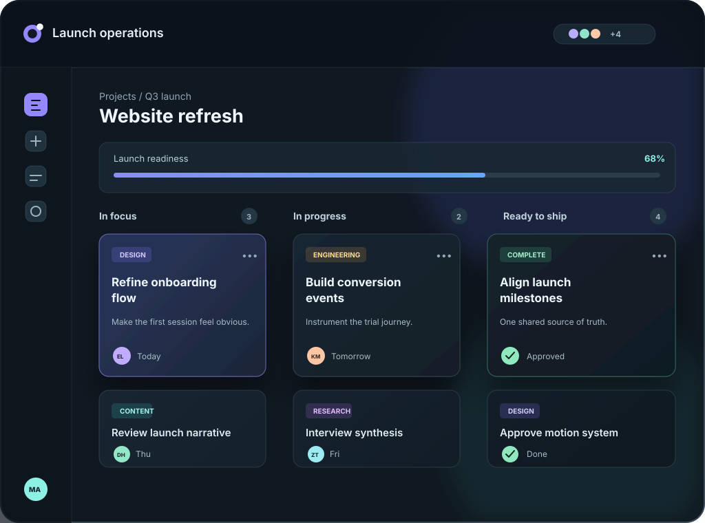

Intentional priorities
Set a clear next move so urgent work never swallows what matters.
Project clarity, in motion
Taskorbit brings plans, priorities, and progress into one calm command center—so your team can keep momentum without the noise.

Trusted by teams at
Built for steady momentum
Less status-chasing. More shared context, useful focus, and room to think clearly.
Set a clear next move so urgent work never swallows what matters.
See progress, waiting work, and the decisions that unblock it.
Surface the updates that need attention; keep the rest quietly searchable.
Gentle reminders make handoffs feel clear, considered, and never pushy.
Keep briefs, decisions, and daily work in one navigable view.
Make small wins visible, so momentum carries the plan forward.
A clearer weekly rhythm
Taskorbit gives your team a simple operating rhythm that feels natural from the first project onward.
Shape a project around outcomes, then turn the next decisions into clear, owned work.
Use a calm, shared view to prioritize what moves the plan forward—not just what arrived last.
Keep decisions, progress, and next steps close enough that momentum never gets lost in translation.
Simple when you start. Scalable when you grow.
Every plan starts with a 14-day free trial. Change pace whenever your team needs to.
Starter
For thoughtful solo work.
Billed monthly
Start freeTeam
For teams finding their rhythm.
Billed monthly
Start freeScale
For complex work across teams.
Billed monthly
Talk to usMade for the people doing the work
We stopped asking for updates because the work finally tells its own story. Our Monday planning feels half as heavy now.
Taskorbit gives us enough structure to move quickly, without making every new idea feel like a process meeting.
The focus view changed our conversations. People arrive knowing what matters, what is blocked, and how they can help.
Questions, answered
Still curious? Say hello and we’ll help you find the right starting point.
Yes. Taskorbit is designed to feel useful from a one-person project to a growing cross-functional team. Start with the work you have today, then add structure only when it earns its place.
When your 14-day trial ends, choose the plan that suits your team. You will not be charged unless you decide to continue, and your workspace stays ready while you make that choice.
Absolutely. Upgrade when you need more room, or change plans as your team evolves. Your projects and history move with you.
Taskorbit can become your team’s home for planning, but it is also designed to work alongside the tools you already rely on. Keep the context close without forcing a disruptive reset.
Every workspace includes role-based access controls and encrypted data handling. Scale customers can add advanced permissions to match more complex team structures.
Your next clear week starts here
Bring the plan into focus and let the best work move forward.
Start your free trial No credit card. No pressure. Just a clearer way to work.